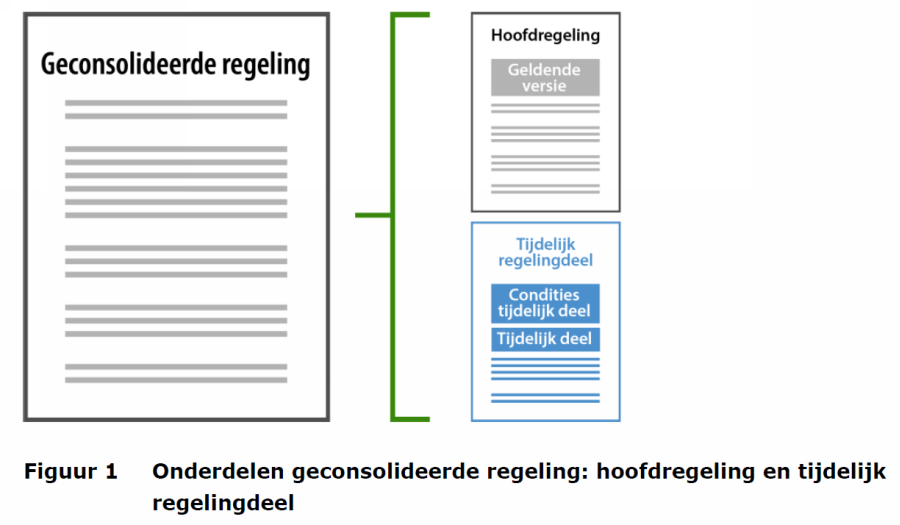

Tijdelijk regelingdeel
Als het gaat om het vaststellen, bekendmaken en beschikbaar stellen van beleid en regelgeving is er in de meeste gevallen maar één bestuursorgaan die dit mag per regeling. Er is doorgaans dus voor elk besluit dat en elke regeling die bekend gemaakt worden maar één bronhouder.
Meervoudig bronhouderschap
De Omgevingswet bevat een drietal uitzonderingen op dit principe, waarbij een bestuursorgaan de bevoegdheid heeft gekregen wijzigingen aan te brengen in een omgevingsdocument van een ander bestuursorgaan. Dit wordt meervoudig bronhouderschap genoemd. In het geval van het omgevingsplan berust de bevoegdheid tot het vaststellen en wijzigen primair bij de gemeente, maar zijn er ook andere bestuursorganen die andere typen besluiten kunnen nemen die een wijziging van het omgevingsplan kunnen inhouden.
Reactieve interventie
Gedeputeerde Staten kunnen met een reactieve interventie besluiten dat een onderdeel van een besluit tot vaststelling of wijziging van het omgevingsplan geen deel van het omgevingsplan uitmaakt (artikel 16.21 Ow).
Projectbesluit
Waterschap, provincie en Rijk kunnen een projectbesluit vaststellen dat het omgevingsplan wijzigt met regels die nodig zijn voor het uitvoeren en in werking hebben of in stand houden van het project (artikel 5.52 lid 1 Ow).
Voorbereidingsbesluit
Een voorbereidingsbesluit wijzigt het omgevingsplan met voorbeschermingsregels; zo'n voorbereidingsbesluit kan worden genomen door gemeente (artikel 4.14 Ow) of door provincie of Rijk (artikel 4.16 Ow).
De wetgever heeft reactieve interventie, projectbesluit en voorbereidingsbesluit zo bedoeld dat het nemen ervan tot gevolg heeft dat het het omgevingsplan, dus een ander type omgevingsdocument, wijzigt. Technisch uitgedrukt zijn er bij een voorbereidingsbesluit op grond van artikel 4.16 Ow, een reactieve interventie en een projectbesluit meerdere bevoegde gezagen, oftewel bronhouders, die het omgevingsplan kunnen wijzigen. Voor meer uitleg over deze instrumenten, zie de bijbehorende toepassingsprofielen (TPOD's). In juridische zin is meervoudig bronhouderschap niet heel ingewikkeld.
Technisch complex
Gebleken is echter dat meervoudig bronhouderschap in technische zin heel complex is. Het is uiteindelijk de bedoeling dat de wijzigingen technisch vormgegeven zullen gaan worden als mutaties van het omgevingsplan conform STOP. Dit betekent dat het bestuursorgaan dat de reactieve interventie, het voorbereidingsbesluit of het projectbesluit heeft genomen, tegelijk met het ter bekendmaking aan de LVBB aanleveren van de reactieve interventie ook het mutatiebericht oftewel de wijzigingsinstructie voor de verwerking van dit besluit in het omgevingsplan moet aanleveren. De betreffende gemeente moet vervolgens dit mutatiebericht ophalen en in het eigen plansysteem in de eigen geconsolideerde versie van het omgevingsplan verwerken. Dit is een zeer complexe operatie. Enerzijds omdat iedere wijziging niet alleen tekst wijzigt, maar ook gevolgen heeft voor allerlei gerelateerde service-informatie, zoals locaties, annotaties en de vragenbomen waarmee het omgevingsplan in het Omgevingsloket bevraagd kan worden. Anderzijds omdat voorlopig niet eenduidig is hoe het versiebeheer op de regeling bij de gemeente uitgevoerd moet worden als partijen buiten het gemeentelijke systeem om wijzigingen kunnen voorbereiden en aanbrengen, zonder dat het gemeentelijke systeem daar kennis van heeft voorafgaand aan de bekendmaking. Bovendien geldt voor het omgevingsplan een overgangsfase waarin gemeenten het omgevingsplan stapsgewijs kunnen opbouwen. In die periode bestaat het omgevingsplan uit het omgevingsplan van rechtswege (bestaande uit de geldende bestemmingsplannen c.a. die in ruimtelijkeplannen.nl zijn gepubliceerd en dan via de overbruggingsfunctie getoond worden), het omgevingsplan van Rijkswege (de bruidsschatregels) en het omgevingsplan dat de gemeente zelf aan het opbouwen is. Ook als voor omgevingsplannen die conform STOP zijn aangeleverd een goede oplossing zou worden gevonden, dan zou deze nog steeds niet werken voor de bestemmingsplannen die via de overbruggingsfunctie worden getoond.
Tijdelijk regelingdeel als voorlopige oplossing
Om deze redenen is het niet haalbaar gebleken dat de plansystemen van bevoegde gezagen op de beoogde datum van inwerkingtreden van de Omgevingswet gereed zijn voor het ondersteunen van de functionaliteit die voor het technisch implementeren van meervoudig bronhouderschap nodig zou zijn. Daarom is er interbestuurlijk besloten om in de eerste periode na het in werking treden van de Omgevingswet geen meervoudig bronhouderschap in technische zin toe te passen, maar te kiezen voor alternatieve oplossingen om zo te komen tot complexiteitsreductie. Als tijdelijke oplossing voor het meervoudig bronhouderschap bij de instrumenten reactieve interventie en voorbereidingsbesluit bevat STOP daarom het tijdelijk regelingdeel. Dit concept zorgt er voor dat de juridische geconsolideerde regeling kan bestaan uit een hoofdregeling en een tijdelijk regelingdeel. Technisch zijn het twee losse delen. Dit ziet er zo uit:

Een regeling bestaat op deze manier uit één hoofdregeling en nul of meer tijdelijke regelingdelen. Elk deel (de hoofdregeling en ieder tijdelijk regelingdeel) is een apart work conform STOP en elk deel wordt beheerd door het bevoegd gezag waarvan het afkomstig is. Elk deel kan worden gewijzigd en heeft dus ook zijn eigen versies. Het 'tijdelijk regelingdeel'-concept geldt zowel voor tekst als voor geografische informatieobjecten.
De hoofdregeling is de geconsolideerde versie van het instrument, dus het initiële besluit geconsolideerd met alle daarna genomen wijzigingsbesluiten die tot technische mutatie van de hoofdregeling hebben geleid. Het tijdelijk regelingdeel is een technisch afzonderlijk deel, dat niet wordt geconsolideerd met de hoofdregeling. Ieder tijdelijk regelingdeel kan met wijzigingsbesluiten worden gewijzigd; dan ontstaat een consolidatie van dat tijdelijk regelingdeel. Ieder tijdelijk regelingdeel begint met een tekstblok met daarin de condities van het tijdelijk regelingdeel: een beschrijving in woorden van de verhouding tussen dit tijdelijk regelingdeel en de hoofdregeling. Dit tekstblok met condities is door middel van een XML-tekstelement in STOP als zodanig te herkennen. Hierdoor kunnen www.overheid.nl en DSO-LV het tekstblok met condities:
tonen bij de regels uit het tijdelijk regelingdeel om aan te geven dat de regels onder bepaalde condities gelden;
tonen bij de regels uit de hoofdregeling om aan te geven dat er een andere versie onder andere condities geldt.
De betekenis van de condities wordt niet gemodelleerd. Er is dus geen attribuut waarmee de aard van de verhouding tussen hoofdregeling en tijdelijk regelingdeel machineleesbaar wordt gemaakt; er wordt bijvoorbeeld niet getoond dat het tijdelijk regelingdeel voorgaat op de hoofdregeling of andersom. De relatie tussen het tijdelijk regelingdeel en de hoofdregeling wordt vastgelegd in de STOP-metadata van het besluit: dít tijdelijk regelingdeel hoort bij díé hoofdregeling. Tijdelijke regelingdelen zijn tijdelijk bedoeld: op een gegeven moment vervallen ze omdat ze niet meer geldig, niet meer van toepassing of niet meer nodig zijn.
Juridisch gezien gaan een reactieve interventie of een voorbereidingsbesluit voor op het omgevingsplan, voor zover zij hier van afwijken. Dit moet het bestuursorgaan dat deze instrumenten gebruikt in woorden vastleggen in het tekstblok aan het begin van het tijdelijk regelingdeel. Vervolgens staan in het tweede deel van de tekst de regels die afwijken van en voorrang hebben op het omgevingsplan. Deze laatste regels zijn de regels die daadwerkelijk juridisch gelden: ze komen als het ware in de plaats van de regels van het omgevingsplan waarvan wordt afgeweken.